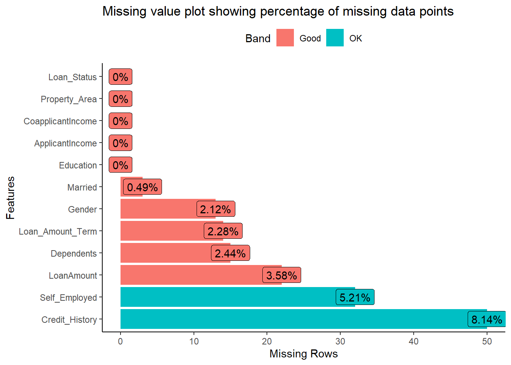

Build your problem-solving skills
For a data science team to build a good model, in-depth correlation analysis may be the best tool to consider.
A Quick Summary using
skimr
You can perform a quick inspection of your data using skimr. This enables you to understand the overview of your data properties, shape, number of missing values, and descriptive summary.
| Name | data |
| Number of rows | 614 |
| Number of columns | 12 |
| _______________________ | |
| Column type frequency: | |
| factor | 8 |
| numeric | 4 |
| ________________________ | |
| Group variables | None |
Variable type: factor
| skim_variable | n_missing | complete_rate | ordered | n_unique | top_counts |
|---|---|---|---|---|---|
| Gender | 13 | 0.98 | FALSE | 2 | Mal: 489, Fem: 112 |
| Married | 3 | 1.00 | FALSE | 2 | Yes: 398, No: 213 |
| Dependents | 15 | 0.98 | FALSE | 4 | 0: 345, 1: 102, 2: 101, 3+: 51 |
| Education | 0 | 1.00 | FALSE | 2 | Gra: 480, Not: 134 |
| Self_Employed | 32 | 0.95 | FALSE | 2 | No: 500, Yes: 82 |
| Credit_History | 50 | 0.92 | FALSE | 2 | 1: 475, 0: 89 |
| Property_Area | 0 | 1.00 | FALSE | 3 | Sem: 233, Urb: 202, Rur: 179 |
| Loan_Status | 0 | 1.00 | FALSE | 2 | Y: 422, N: 192 |
Variable type: numeric
| skim_variable | n_missing | complete_rate | mean | sd | p0 | p25 | p50 | p75 | p100 |
|---|---|---|---|---|---|---|---|---|---|
| ApplicantIncome | 0 | 1.00 | 5403.46 | 6109.04 | 150 | 2877.5 | 3812.5 | 5795.00 | 81000 |
| CoapplicantIncome | 0 | 1.00 | 1621.25 | 2926.25 | 0 | 0.0 | 1188.5 | 2297.25 | 41667 |
| LoanAmount | 22 | 0.96 | 146.41 | 85.59 | 9 | 100.0 | 128.0 | 168.00 | 700 |
| Loan_Amount_Term | 14 | 0.98 | 342.00 | 65.12 | 12 | 360.0 | 360.0 | 360.00 | 480 |
A quick summary using
DataExplorer
click here to view code

A Quick Summary using
dataxray
click here to view code
# A tibble: 22 × 14
Loan_St…¹ ORDER TYPE VAR LABEL FORMAT UNITS n missing disti…² counts…³
<fct> <int> <chr> <chr> <chr> <chr> <chr> <dbl> <dbl> <dbl> <list>
1 Y 1 CHAR Gend… <NA> <NA> <NA> 414 8 2 <tibble>
2 Y 2 CHAR Marr… <NA> <NA> <NA> 419 3 2 <tibble>
3 Y 3 CHAR Depe… <NA> <NA> <NA> 413 9 4 <tibble>
4 Y 4 CHAR Educ… <NA> <NA> <NA> 422 0 2 <tibble>
5 Y 5 CHAR Self… <NA> <NA> <NA> 399 23 2 <tibble>
6 Y 6 NUM Appl… <NA> <NA> <NA> 422 0 364 <tibble>
7 Y 7 NUM Coap… <NA> <NA> <NA> 422 0 215 <tibble>
8 Y 8 NUM Loan… <NA> <NA> <NA> 411 11 161 <tibble>
9 Y 9 NUM Loan… <NA> <NA> <NA> 414 8 9 <tibble>
10 Y 10 CHAR Cred… <NA> <NA> <NA> 385 37 2 <tibble>
# … with 12 more rows, 3 more variables: values_df <list>, extremes_df <list>,
# spike_hist <list>, and abbreviated variable names ¹Loan_Status, ²distinct,
# ³counts_dfclick here to view code
subscribe.html